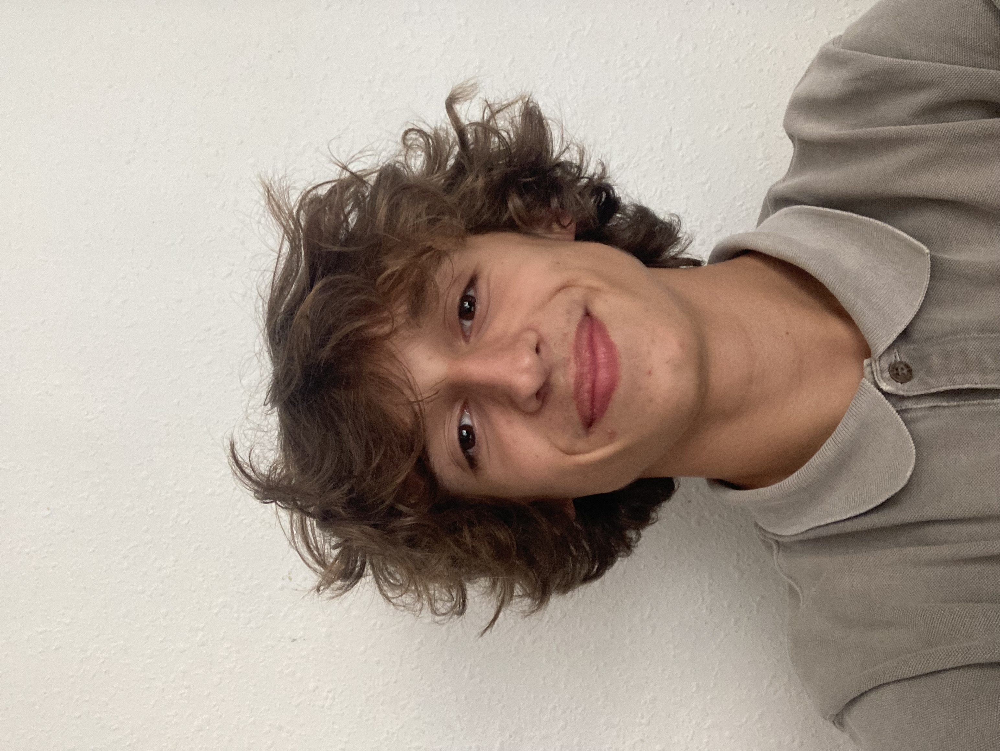

Hello, I'm Romain 😁
Hello everyone, I'm Romain. I play rugby, enjoy cycling, and love gastronomy (especially French cuisine!) I am a student at IÉSEG.
My favorite websiteRugby 🏉
Rugby's dynamic and physical nature fosters a unique camaraderie among players, making each match a thrilling experience that I truly cherish when sharing the field with my friends.The strategic teamwork required in rugby adds an extra layer of excitement, as we coordinate our efforts to tackle challenges on the field.
Gastronomy 🥘
Gastronomy is a passion of mine, exploring the diverse flavors of world cuisine. Cooking is not just a hobby, but a joyful experience, and savoring the delicious results is the ultimate reward! Whether experimenting with new recipes or savoring traditional dishes, the art of gastronomy allows me to connect with different cultures through their culinary traditions. It's not just about the taste; it's a journey that tantalizes the senses and opens a window to the rich tapestry of global flavors.
Biking 🚲
Biking is a source of pure joy for me, especially when pedaling through the serene landscapes of the forest. The rhythmic cadence of the ride and the rustling of leaves create a therapeutic escape, turning each journey into a revitalizing experience that I eagerly look forward to.